Combate¶
A seção Combate é o gerenciador operacional dos encontros em DnDino. Ela foi pensada para ser rápida, compacta e legível quando a mesa está no momento mais intenso da sessão.
O combate sempre nasce a partir de um local e pode incluir os heróis da aventura, presenças locais, NPCs e monstros ligados à cena.
Esta página explica:
- preparação do pré-combate
- entrada e ordenação da iniciativa
- tela principal de combate
- controles do turno
- ataques, dano, cura, condições e testes de resistência
- links internos em ataques e habilidades
- resumo lateral, últimos eventos e desfazer
- Janela dos Jogadores
- resumo final e estatísticas
Uma ou Duas Telas¶
O combate funciona bem em uma única tela: todo o trabalho do Mestre fica na janela principal, com rastreador de iniciativa, fichas compactas e resumo.
Com uma segunda tela, você também pode usar a Janela dos Jogadores:
- na tela do Mestre ficam controles, fichas, alvos, condições e estatísticas
- na tela dos jogadores aparece uma apresentação mais limpa, com imagens e informações visíveis
Tip
A segunda tela é opcional. Ela serve para separar a visão operacional do Mestre da apresentação mais evocativa para os jogadores.
Janela dos Jogadores Durante o Combate¶
Quando o encontro começa, DnDino pode abrir ou atualizar a Janela dos Jogadores.
Se a apresentação estiver ativa, ela pode mostrar:
- introdução inicial com os participantes
- participante do turno atual
- animações de ataque
- resumo final

A sobreposição pode incluir:
- rodada
- duração do encontro
- PV atuais, máximos e temporários
- condições
- próximo turno


Para heróis/aliados, NPCs e monstros você pode decidir separadamente nas configurações quais informações serão mostradas aos jogadores. Se um NPC ou monstro estiver marcado como Aliado, ele também é tratado como herói/aliado na tela dos jogadores.
Configurações Úteis¶
As opções principais ficam em Configurações, nas seções de Combate e Janela dos Jogadores.
As mais importantes são:
Abrir a Janela dos Jogadores mesmo com um monitorMostrar controles da Janela dos Jogadores na barra superiorMostrar introdução do combate aos jogadoresMostrar resumo final aos jogadoresMostrar rodada na tela dos jogadoresMostrar duração do encontro na tela dos jogadoresMostrar próximo turno na tela dos jogadoresMostrar PV dos heróis na tela dos jogadoresMostrar condições dos heróis na tela dos jogadoresMostrar PV dos NPCs aos jogadoresMostrar condições dos NPCs aos jogadoresMostrar nomes dos NPCs aos jogadoresMostrar PV dos monstros aos jogadoresMostrar condições dos monstros aos jogadoresMostrar nomes dos inimigos aos jogadores
Encerrar um combate sempre pede confirmação, porque fechar o encontro sincroniza estado e estatísticas.
Onde o Combate Abre¶
O combate é criado a partir de um local. Depois de aberto, a tela muda conforme o estado do encontro:
- Pré-combate: você prepara participantes, nomes e iniciativas.
- Combate ativo: você gerencia turnos, fichas, alvos e resumo.
- Combate concluído: você consulta o resumo final do Mestre.
Pré-Combate¶
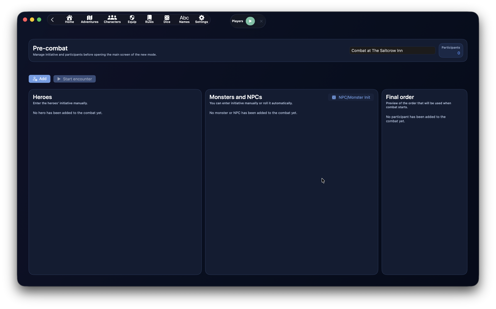
O pré-combate serve para preparar o encontro antes do primeiro turno.
A tela tem três áreas principais:
- Heróis
- Monstros e NPCs
- Ordem final
No topo você também vê o nome do encontro, o número de participantes e as ações principais.
Os cartões dos participantes já usam a cor do papel nessa fase, para distinguir imediatamente heróis, aliados, neutros e inimigos antes de iniciar o encontro.
Ações do Pré-Combate¶
As ações principais são:
AdicionarIniciar encontroInit NPCs/Monstros, na coluna de monstros e NPCs
Adicionar abre o seletor de participantes.
Iniciar encontro começa o combate. Se pelo menos um participante tiver iniciativa 0, DnDino pede confirmação.
Init NPCs/Monstros rola automaticamente a iniciativa apenas para monstros e NPCs. Os heróis normalmente são inseridos manualmente, porque o valor costuma vir da mesa.
Modificar Nomes e Iniciativa¶
No pré-combate você pode corrigir:
- nome exibido do participante
- iniciativa
Isso é especialmente útil para monstros, por exemplo:
- Goblin 1
- Goblin 2
- Capitão goblin
A iniciativa é recebida enquanto você digita, sem precisar sair do campo. As colunas de trabalho não são reordenadas continuamente durante a digitação: a ordenação definitiva é aplicada ao iniciar o combate.
Ordem Final¶
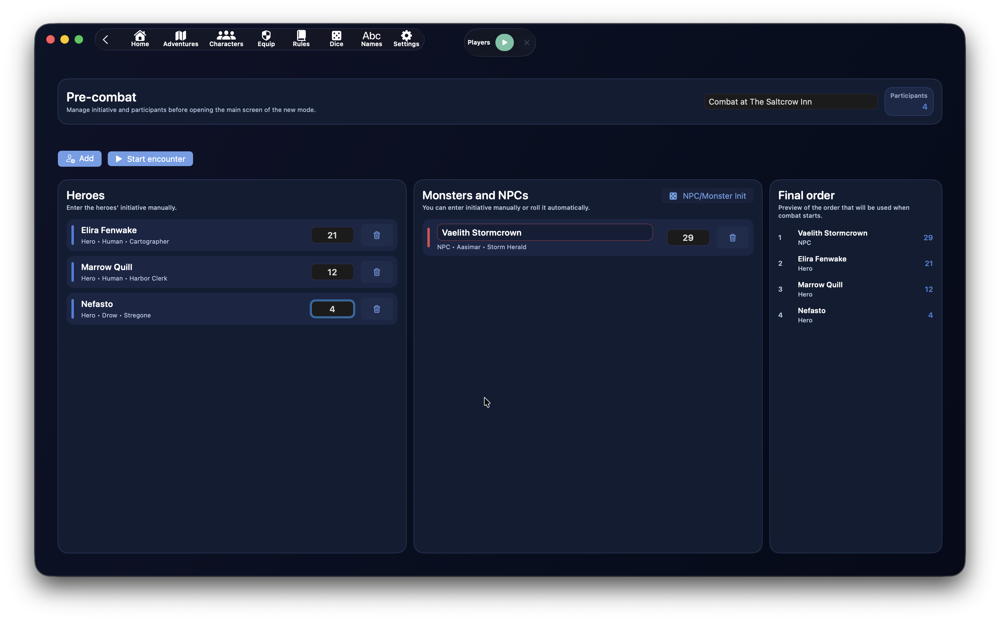
O painel Ordem final mostra a prévia sempre atualizada da ordem que será usada ao iniciar.
A ordem é calculada assim:
- iniciativa mais alta
- em caso de empate, modificador de Destreza mais alto
- se o empate continuar, desempate aleatório
Esse painel permite conferir o resultado sem atrapalhar a entrada dos valores.
Origem dos Participantes¶
O painel de adição pode oferecer:
HeróisPresenças do localGlobais
Heróis já ligados à aventura só podem entrar uma vez no mesmo combate.
As presenças do local reutilizam o estado local, se disponível.
Monstros globais podem ser adicionados várias vezes, porque muitas vezes representam várias cópias da mesma criatura.
Combate Ativo¶
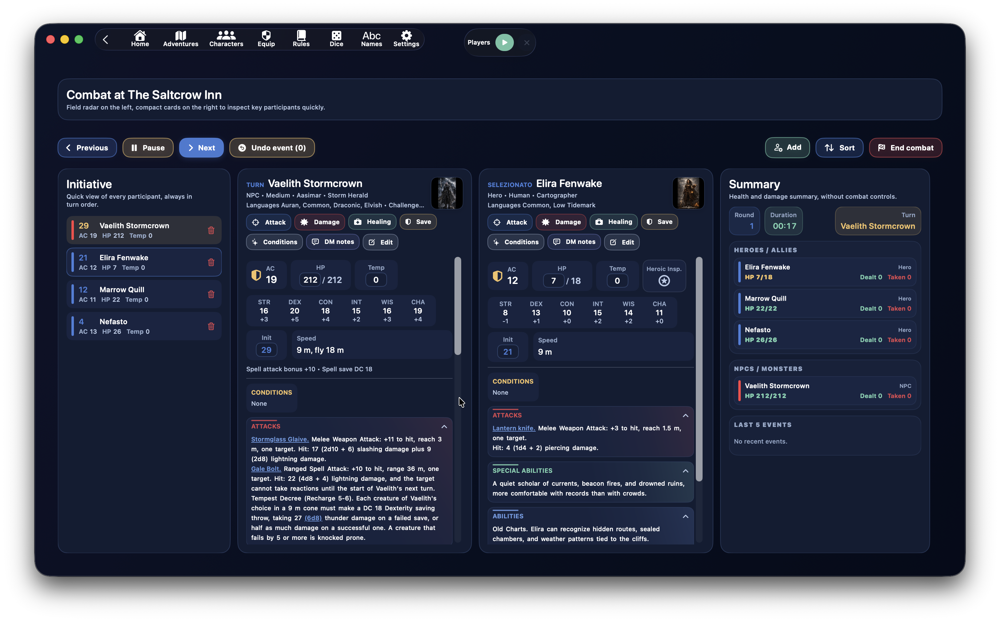
Quando o encontro começa, a tela passa para a gestão operacional.
Ela é dividida em três zonas:
- à esquerda, o rastreador de iniciativa
- ao centro, as fichas compactas do turno atual e do selecionado
- à direita, o resumo de saúde, dano e eventos
O objetivo é manter visível o máximo possível de informação útil sem abrir painéis enormes.
Controles do Turno¶
Os controles principais ficam no topo.
À esquerda:
AnteriorPausa/RetomarPróximoDesfazer evento
À direita:
AdicionarOrdenarFim do combate
Anterior e Próximo mudam o turno.
Pausa para o temporizador do combate. Em pausa, vira Retomar.
Desfazer evento restaura um dos últimos eventos que podem ser desfeitos.
Adicionar insere outros participantes mesmo durante o combate.
Ordenar reconstrói a ordem de iniciativa.
Fim do combate fecha o encontro após confirmação.
Rastreador de Iniciativa¶
A coluna esquerda mostra todos os participantes de forma compacta.
Cada linha mostra:
- iniciativa
- nome
- CA
- PV
- PV temporários
- indicador de condição, se existir
- cor do papel
A cor lateral ajuda a distinguir:
- heróis
- aliados
- neutros
- inimigos
Ao clicar em uma linha:
- o participante abre como selecionado
- se já estava selecionado, a coluna do selecionado fecha
O botão de lixeira remove o participante do combate.
Fichas do Turno e do Selecionado¶
Ao centro você pode ver até duas fichas:
- o participante do turno
- o participante selecionado na lista
As fichas têm largura fixa e rolagem vertical própria, para a página continuar estável mesmo com textos longos.
No topo da ficha aparecem:
- nome
- tipo, linhagem ou subtipo
- idiomas, se existirem
- grau de desafio e XP, se existirem
- prévia da imagem
- botões operacionais
Campos Rápidos¶
Na ficha você pode modificar diretamente:
- PV atuais
- PV temporários
- iniciativa
A CA é mostrada como valor compacto com ícone de escudo.
Para heróis da aventura, também pode aparecer o botão de Inspiração Heroica.
As alterações de PV permanecem sincronizadas com a lista esquerda e o resumo direito.
Ações do Participante¶
Cada ficha pode mostrar:
AtacarDanoCuraTesteCondiçõesNotas do MestreModificar
Atacar abre uma janela com o atacante e a lista de alvos.
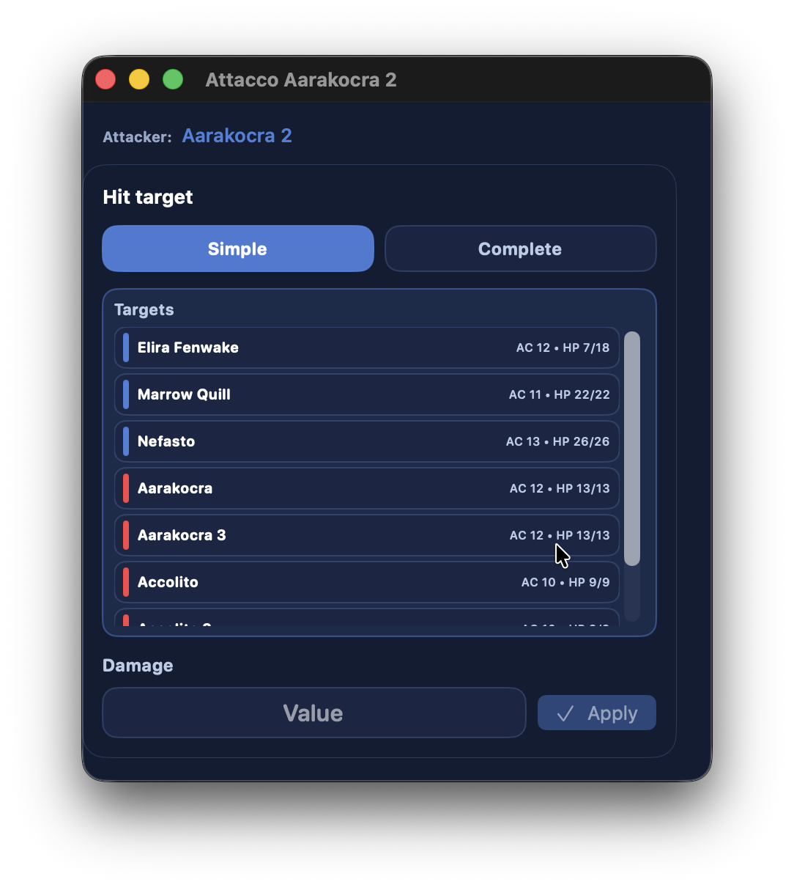
Dano aplica dano direto ao participante.
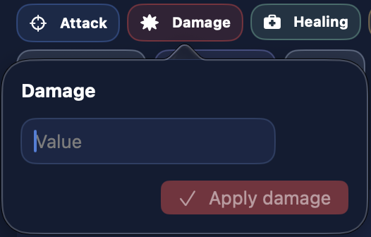
Cura aplica cura direta.
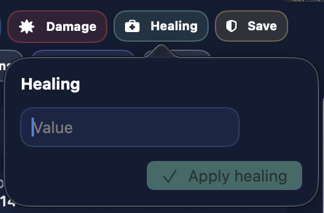
Teste abre os testes de resistência disponíveis.
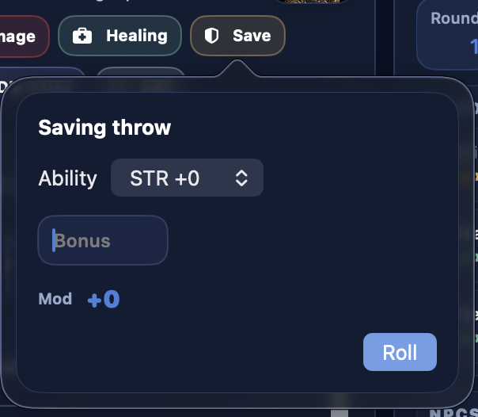
Condições abre uma janela dedicada à gestão de condições.
Notas do Mestre guarda anotações sobre o participante. As notas não entram no desfazer.
Modificar abre o editor completo do participante.
Lista de Alvos¶
As listas de alvos são ordenadas conforme o atacante.
Se o atacante for inimigo:
- primeiro heróis e aliados
- depois neutros
- depois inimigos
Se o atacante for herói, aliado ou neutro:
- primeiro inimigos
- depois neutros
- depois heróis e aliados
Dentro de cada grupo, os nomes são ordenados alfabeticamente.
A linha colorida lateral ajuda a reconhecer o papel do alvo.
Ataques, Habilidades e Links Internos¶
As seções principais são:
CondiçõesAtaquesHabilidades especiaisHabilidadesMagiasDescrição
As seções são recolhíveis e usam um leve gradiente coerente com a cor do título.
Os textos de ataques, habilidades especiais e habilidades podem conter links internos criados durante a criação ou modificação do personagem.
Durante o combate, esses links abrem janelas dedicadas para resolver a ação com mais espaço.
Os links mais úteis são:
Ataque completo1d20 + MOD- rolagem livre
- rolagem de dano
- links para entidades internas
Ataque Completo¶
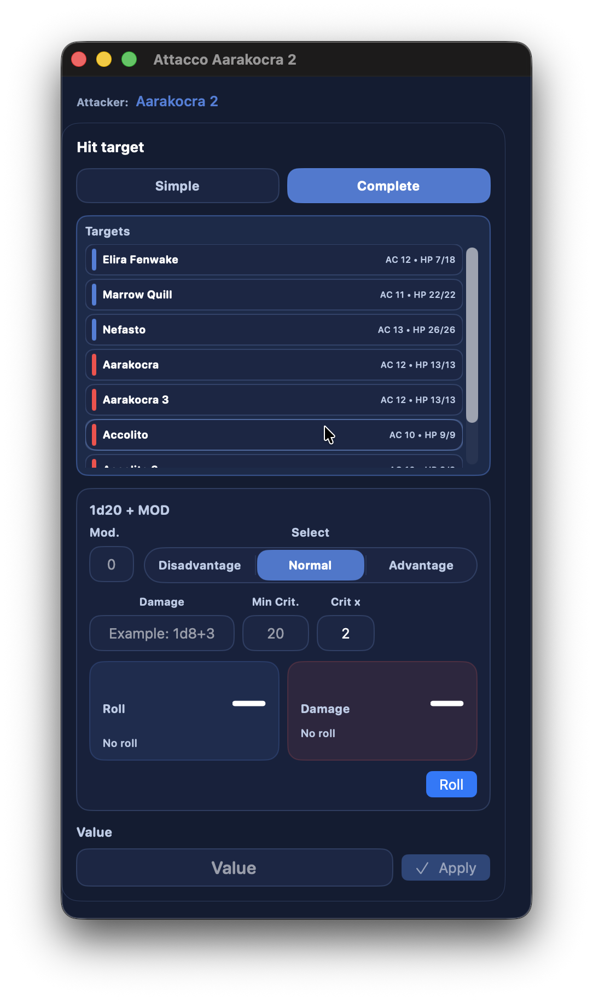
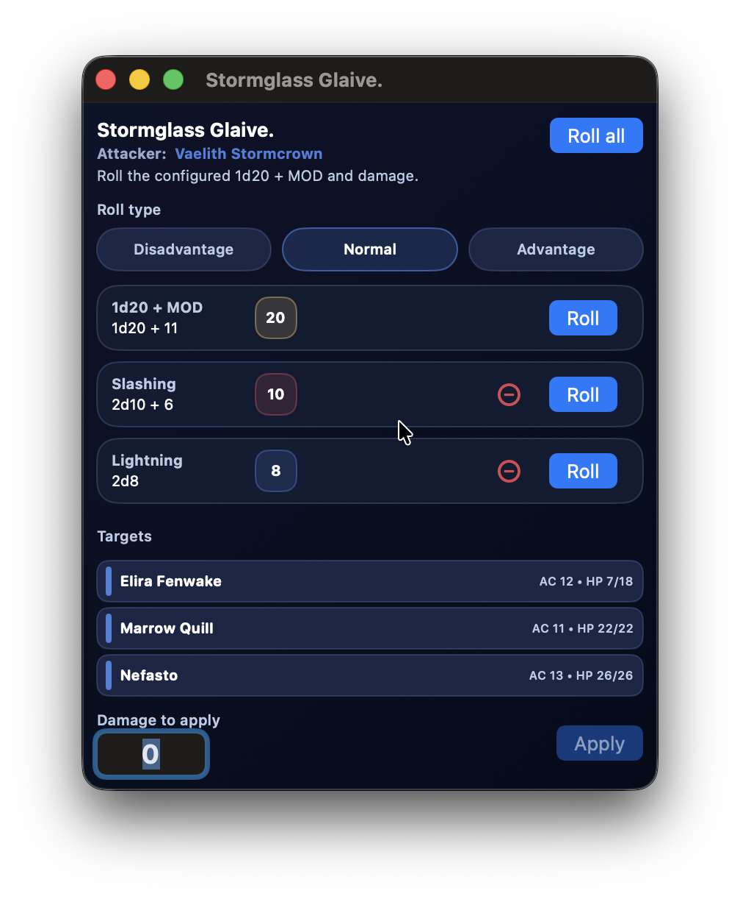
Ataque completo foi pensado para textos de ataque de monstros, NPCs ou heróis.
Ele é preparado na tela de criação ou modificação do personagem: selecione o texto do ataque e crie um link do tipo Ataque completo. Durante o combate, esse texto vira uma ação pronta para abrir e resolver.
Quando usado em combate:
- a janela mostra o nome do ataque
- o atacante fica indicado claramente
- você pode escolher um ou mais alvos
- você pode gerenciar várias linhas de dano
- você aplica o dano selecionado aos alvos escolhidos
Ao criar o link, o dano é modular: o botão + adiciona linhas e só aparecem as linhas preenchidas.
Magias¶
Se o participante tiver magias, a ficha mostra a seção Magias.
As magias são agrupadas por nível.
Para monstros e NPCs, a linha do nível também pode mostrar o contador de espaços usados, por exemplo:
0/32/33/3
O botão Usar em cada magia aumenta o contador daquele nível.
O contador não bloqueia o uso quando chega ao máximo: ele serve apenas como lembrete para o Mestre.
Truques não usam espaços.
Condições¶
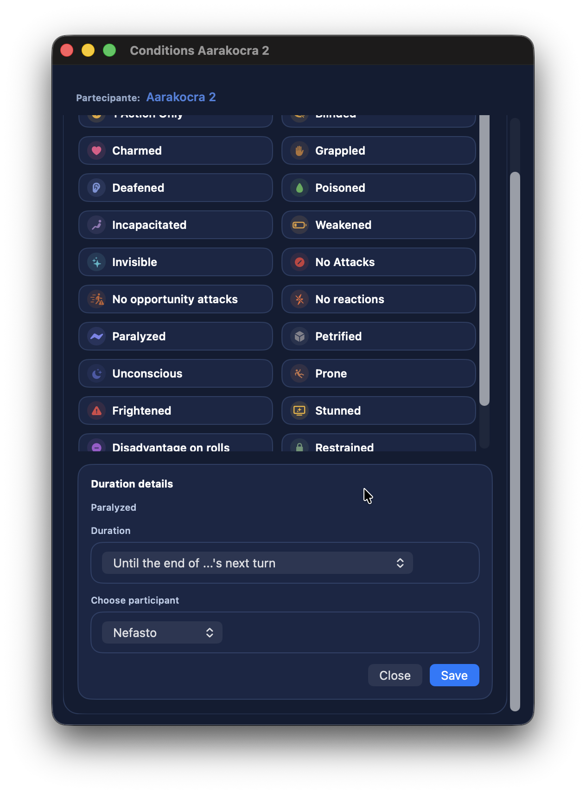
A janela Condições permite:
- adicionar condições
- remover condições
- escolher duração
- vincular a expiração ao turno de um participante
- gerenciar notas relacionadas
Quando uma condição é aplicada, DnDino mostra feedback visual na tela e na linha afetada.
Heróis a 0 PV ou Menos¶
Os heróis seguem uma regra diferente de monstros e NPCs.
Um herói pode descer abaixo de 0 PV.
A regra é:
- entre
0e-(PV máximos - 1)fica Inconsciente - a
-PV máximosou menos morre - também morre com 3 falhas nos testes de resistência contra a morte
Quando um herói está a 0 PV ou menos mas não morreu, a ficha mostra os testes de resistência contra a morte.
Com 3 sucessos, volta a 1 PV.
NPCs e Monstros a 0 PV¶
Para NPCs e monstros a regra é mais simples:
- a
0PV ou menos são considerados mortos - são excluídos do ciclo de turnos
- o resumo pode mostrá-los como mortos
Resumo Lateral¶
A coluna direita mostra o Resumo.
Inclui:
- rodada
- duração
- turno atual
- saúde de heróis e aliados
- saúde de NPCs e monstros
- dano causado
- dano sofrido
- últimos 5 eventos
É uma visão de controle: serve para ler rapidamente a situação.
Os PV mudam de cor:
- normal se o participante está bem
- amarelo abaixo de 50 %
- laranja abaixo de 10 %
- vermelho a 0 ou menos
Para heróis, os PV só são riscados quando o personagem realmente morreu, não apenas por estar abaixo de 0 PV.
Últimos 5 Eventos e Desfazer¶
O combate conserva os últimos eventos que podem ser desfeitos.
Desfazer pode incluir:
- ataques
- dano aplicado por ataques
- cura, se for gerida como evento que pode ser desfeito
- condições aplicadas ou modificadas
As Notas do Mestre não são desfeitas.
Desfazer também restaura as estatísticas ligadas, para que dano causado e sofrido continuem coerentes.
Feedback Visual¶
Quando algo acontece no combate, DnDino mostra feedback imediato:
- banner superior
- animação na linha do participante afetado
- efeito no botão
Aplicar, quando existir - atualização do resumo lateral
Assim fica claro que o comando foi recebido.
Resumo Final do Encontro¶
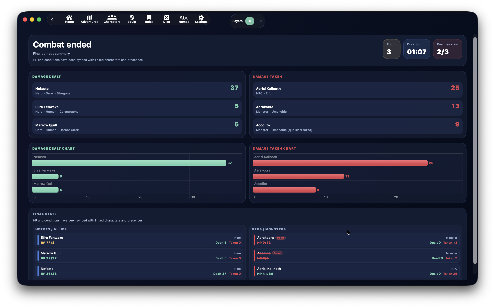

Quando você confirma o fim do combate, o encontro deixa de ser modificável.
A tela final mostra:
- rodadas totais
- duração
- inimigos mortos
- dano causado
- dano sofrido
- tempo médio dos turnos para heróis e Mestre
- estado final dos participantes
Os PV finais e as condições são sincronizados com os registros ligados.
Sincronização Final¶
Ao fechar o combate, DnDino sincroniza os dados necessários.
Para heróis da aventura:
- PV atuais
- PV temporários
- condições
- estado final
Para presenças do local com estado local:
- PV atuais
- PV temporários
- condições
- estado final
O combate também pode alimentar dados da sessão live e estatísticas.
Estatísticas¶
DnDino usa combates concluídos para alimentar estatísticas e gráficos.
As estatísticas podem incluir:
- dano causado
- dano sofrido
- duração dos encontros
- tempo médio dos turnos para heróis e Mestre
- número de combates
- inimigos mortos
- evolução do dano por dia
- duração média das sessões
No painel da aventura, a visão Estatísticas da Aventura reúne combates concluídos, mesmo fora de uma única sessão live, e agrupa tudo de forma consultável.
O resumo da sessão live pode mostrar gráficos dos combates concluídos durante aquela sessão.
Quando Funciona Melhor¶
O combate de DnDino funciona melhor quando:
- você prepara bem o pré-combate
- atribui iniciativas e nomes antes de começar
- usa o rastreador esquerdo para manter a visão geral
- mantém aberta a ficha do turno e, quando útil, a do alvo selecionado
- usa links em ataques e habilidades
- usa o resumo lateral para saúde, dano e eventos recentes
- termina o combate só quando tem certeza, para manter estatísticas e sincronizações limpas
Tip
Mesmo que DnDino automatize muitas operações, você pode continuar rolando dados físicos. Nesse caso, use o combate principalmente para aplicar dano, cura e condições rapidamente, sem recalcular PV e estatísticas à mão.